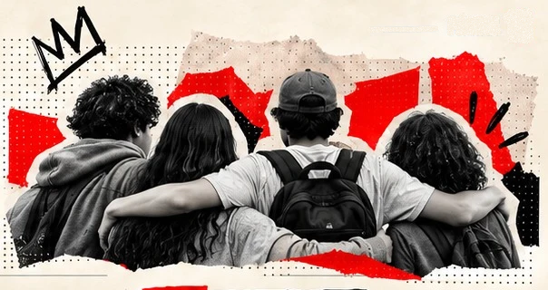
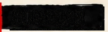
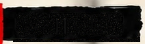
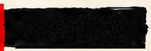
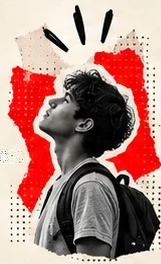
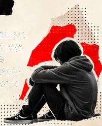
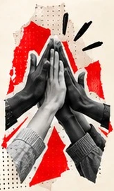
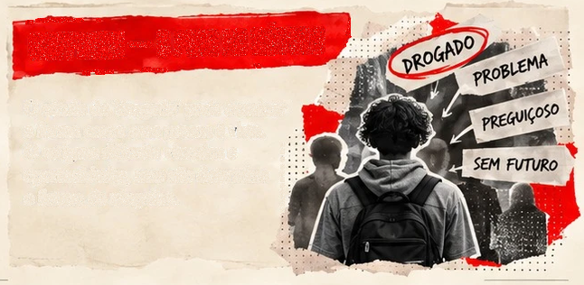
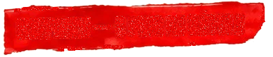
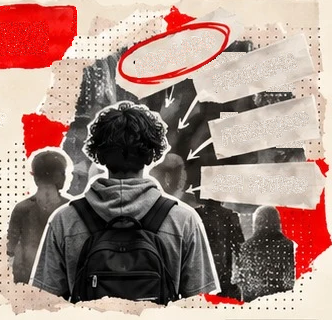
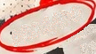
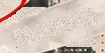
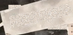
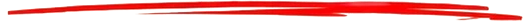
SOB EFEITO
PÁGINA 16
DO PRAZER AO ALÍVIO
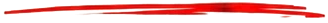
Risco, proteção e vínculos na adolescência.
1COMEÇAR
Curiosidade, prazer, pertencimento,
busca de desempenho ou alívio de
sofrimento podem fazer parte do início
do consumo. Reconhecer essas motivações
não é recomendar o uso; é abandonar
explicações que só enxergam erro ou
desvio moral.
2CONTINUAR
Em alguns padrões de uso, mudanças
nos sistemas de recompensa e estresse
fazem a substância passar a aliviar
também o desconforto da sua ausência.
Essa trajetória não ocorre com todas
as pessoas que experimentam.
3PROTEGER
Adolescência e início da vida adulta
são períodos de intensas mudanças
biológicas e sociais. Riscos dependem
da substância, dose, frequência,
combinações e contexto. Relações e
instituições podem aumentar
vulnerabilidades ou oferecer
proteção.
| DIMENSÃO | RISCO | PROTEÇÃO |
|---|---|---|
| AMIZADES | Pressão e medo de exclusão | Recusar sem perder o vínculo |
| FAMÍLIA | Violência e falta de apoio | Diálogo, segurança e acompanhamento |
| ESCOLA | Evasão e afastamento sem escuta |
Pertencimento, permanência e apoio |
| TERRITÓRIO | Violência e barreiras aos serviços | Saúde, cultura, esporte e espaços seguros |
GOFFMAN — O PESO DO RÓTULO
O rótulo de ‘drogado’ pode dominar
a forma como uma pessoa é vista.
O estigma dificulta vínculos e
oportunidades, mas não determina
o futuro de ninguém.
- DROGADO
- PROBLEMA
- PREGUIÇOSO
- SEM FUTURO
Fatores de risco alteram probabilidades. Não determinam destinos.”